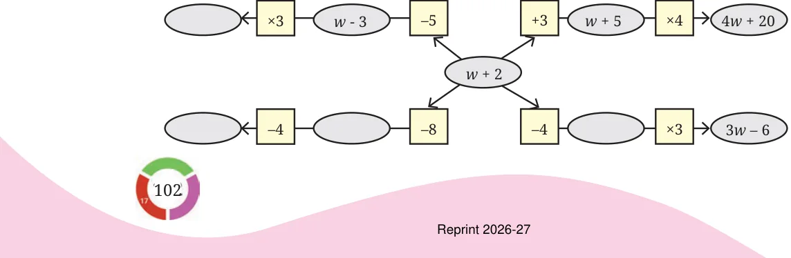
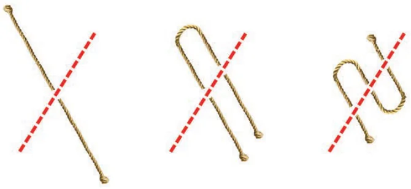
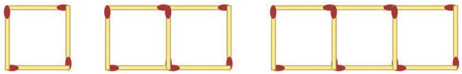
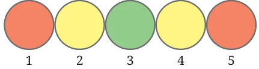
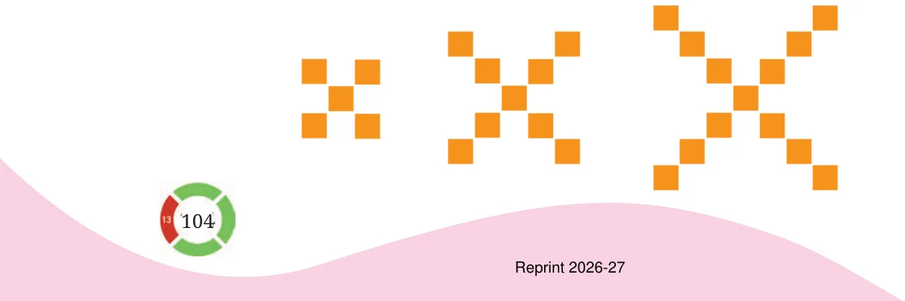
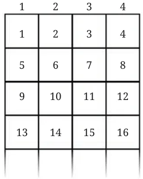

For the problems asking you to find suitable expression(s), first try to understand the relationship between the different quantities in the situation described. If required, assume some values for the unknowns and try to find the relationship.
- One plate of Jowar roti costs ₹30 and one plate of Pulao costs ₹20. If x plates of Jowar roti and y plates of pulao were ordered in a day, which expression(s) describe the total amount in rupees earned that day?
(a) \(30x + 20y\) (b) \((30 + 20) \times (x + y)\) (c) \(20x + 30y\) (d) \((30 + 20) \times x + y\) (e) \(30x - 20y\) - Pushpita sells two types of flowers on Independence day: champak and marigold. 'p' customers only bought champak, 'q' customers only bought marigold, and 'r' customers bought both. On the same day, she gave away a tiny national flag to every customer. How many flags did she give away that day?
(a) \(p + q + r\) (b) \(p + q + 2r\) (c) \(2 \times (p + q + r)\) (d) \(p + q + r + 2\) (e) \(p + q + r + 1\) (f) \(2 \times (p + q)\) - A snail is trying to climb along the wall of a deep well. During the day it climbs up 'u' cm and during the night it slowly slips down 'd' cm. This happens for 10 days and 10 nights.
- Write an expression describing how far away the snail is from its starting position.
- What can we say about the snail's movement if \(d > u\)?
- Radha is preparing for a cycling race and practices daily. The first week she cycles 5 km every day. Every week she increases the daily distance cycled by 'z' km. How many kilometers would Radha have cycled after 3 weeks?
- In the following figure, observe how the expression \(w + 2\) becomes \(4w + 20\) along one path. Fill in the missing blanks on the remaining paths. The ovals contain expressions and the boxes contain operations.

- A local train from Yahapur to Vahapur stops at three stations at equal distances along the way. The time taken in minutes to travel from one station to the next station is the same and is denoted by t. The train stops for 2 minutes at each of the three stations.
- If \(t = 4\), what is the time taken to travel from Yahapur to Vahapur?
- What is the algebraic expression for the time taken to travel from Yahapur to Vahapur? [Hint: Draw a rough diagram to visualise the situation]
- Simplify the following expressions:
- \(3a + 9b - 6 + 8a - 4b - 7a + 16\)
- \(3(3a - 3b) - 8a - 4b - 16\)
- \(2(2x - 3) + 8x + 12\)
- \(8x - (2x - 3) + 12\)
- \(8h - (5 + 7h) + 9\)
- \(23 + 4(6m - 3n) - 8n - 3m - 18\)
- Add the expressions given below:
- \(4d - 7c + 9\) and \(8c - 11 + 9d\)
- \(-6f + 19 - 8s\) and \(-23 + 13f + 12s\)
- \(8d - 14c + 9\) and \(16c - (11 + 9d)\)
- \(6f - 20 + 8s\) and \(23 - 13f - 12s\)
- \(13m - 12n\) and \(12n - 13m\)
- \(-26m + 24n\) and \(26m - 24n\)
- Subtract the expressions given below:
- \(9a - 6b + 14\) from \(6a + 9b - 18\)
- \(-15x + 13 - 9y\) from \(7y - 10 + 3x\)
- \(17g + 9 - 7h\) from \(11 - 10g + 3h\)
- \(9a - 6b + 14\) from \(6a - (9b + 18)\)
- \(10x + 2 + 10y\) from \(-3y + 8 - 3x\)
- \(8g + 4h - 10\) from \(7h - 8g + 20\)
- Describe situations corresponding to the following algebraic expressions:
- \(8x + 3y\)
- \(15x - 2x\)
- Imagine a straight rope. If it is cut once as shown in the picture, we get 2 pieces. If the rope is folded once and then cut as shown, we get 3 pieces. Observe the pattern and find the number of pieces if the rope is folded 10 times and cut. What is the expression for the number of pieces when the rope is folded r times and cut?

- Look at the matchstick pattern below. Observe and identify the pattern. How many matchsticks are required to make 10 such squares. How many are required to make w squares?

- Have you noticed how the colours change in a traffic signal? The sequence of colour changes is shown below. Find the colour at positions 90, 190, and 343. Write expressions to describe the positions for each colour.

- Observe the pattern below. How many squares will be there in Step 4, Step 10, Step 50? Write a general formula. How would the formula change if we want to count the number of vertices of all the squares?

- Numbers are written in a particular sequence in this endless 4-column grid.

1 2 3 4 1 2 3 4 5 6 7 8 9 10 11 12 13 14 15 16 - Give expressions to generate all the numbers in a given column (1, 2, 3, 4).
- In which row and column will the following numbers appear:
- 124
- 147
- 201
- What number appears in row r and column c?
- Observe the positions of multiples of 3.
Do you see any pattern in it? List other patterns that you see.